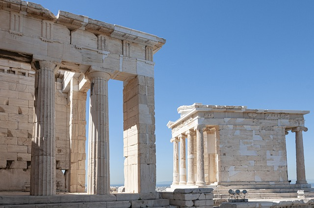
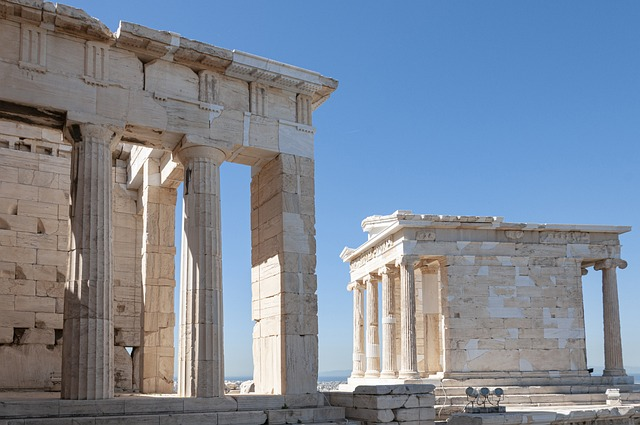

Turquia e Grécia
Uma jornada espiritual e cultural por Portugal, Espanha, França, Croácia e Bósnia e Herzegovina, visitando destinos sagrados como o Santuário de Fátima, Lourdes, Medjugorje e a Catedral de Santiago de Compostela. Explore cidades históricas como Lisboa, Paris, Coimbra, Porto e Zagreb, com destaque para monumentos icônicos como o Mosteiro dos Jerônimos, a Torre de Belém e o Palácio de Diocleciano. Uma viagem única de fé, história e devoção.
 

1º Dia - ISTAMBUL
Chegada no Aeroporto de Istambul, traslado ao hotel. Jantar e pernoite.
2º Dia – ISTAMBUL
Café da manhã no hotel. Saída para visita à Cidade Antiga. Visita à majestosa e elegante Mesquita Azul, conhecida por suas decorações interiores. Em seguida, visitaremos o Hipódromo da Época Bizantina e a Catedral de Santa Sofia, datada do século VI. À tarde, visita ao Palácio Topkapi, a residência dos sultões do Império Otomano, famoso por sua excelente coleção de jóias e porcelanas. A última parada será no Gran Bazar, onde será possível realizar compras de artesanato local. Jantar e pernoite.
3º Dia - ISTAMBUL E CAPADÓCIA
Café da manhã no hotel. Manhã de cruzeiro no Bósforo, que separa o Oriente do Ocidente. Durante o cruzeiro, visita ao Bazar das Especiarias e Fortaleza Rumeli. No final da tarde, transferência para o aeroporto e voo para Kayseri (Capadócia). Chegada e traslado ao hotel. Jantar e pernoite.
4º Dia – CAPADÓCIA E GOREME
Café da manhã no hotel. Visita à Cidade Subterrânea de Kaymakli, famosa por suas formações rochosas de origem vulcânica, vestígios da cultura Hittite e uso por comunidades cristãs no século IV. Em seguida, visita ao Museu ao Ar Livre de Goreme, com igrejas medievais e afrescos nas cavernas. Continuação para Pasabagi, na área de Zelve, local de retiro para monges. Visita a Avanos, cidade da cerâmica, banhada pelo maior rio da Turquia. Jantar e pernoite. Sugestão: Passeio opcional de balão ao amanhecer para ver as paisagens deslumbrantes da Capadócia.
5º Dia – CAPADÓCIA, KONYA E PAMUKKALE
Café da manhã no hotel. Visita a uma cidade subterrânea, construída como depósito de cereais. Continuação para Konya, com parada em um Karavansaray. Em Konya, visita ao Mosteiro dos Derviches Dançantes, fundado por Mevlana. Após a visita, viagem para Pamukkale. Jantar e pernoite.
6º Dia – PAMUKKALE, HIERAPOLIS E KUSADASI
Café da manhã no hotel. Visita aos espetaculares terraços de travertino em Pamukkale e às ruínas de Hierápolis, incluindo o magnífico cemitério de Necrópole, a piscina de banhos termais, o Teatro Romano e o Museu. Em seguida, visita a Afrodisias, a cidade de Afrodite, com o Museu, o Templo de Afrodite, o Teatro, o Estádio e o Ágora. Continuação para Kusadasi. Chegada e traslado ao hotel. Jantar e pernoite.
7º Dia – ÉFESO
Café da manhã no hotel. Saída para visita à antiga cidade de Éfeso, a mais bem preservada cidade greco-romana do mundo, incluindo a Ágora, Odeon, Curetes Street, Biblioteca de Celsius, Banhos Romanos, o Grande Teatro e a Rua de Mármore. Após o almoço, visita à Casa da Virgem Maria, local de peregrinação, e às ruínas do Templo de Artemis, uma das sete maravilhas do mundo antigo. Jantar e pernoite em Kusadasi.
8º Dia – KUSADASI, PATMOS E CRUZEIRO ILHAS GREGAS
Café da manhã no hotel. Traslado para o porto de Kusadasi e navegação para Patmos. Chegada por volta das 16h. Tempo livre até 21h. Retorno ao navio. Noite a bordo. Todas as refeições inclusas.
9º Dia – RODES
Café da manhã. Chegada a Rodes por volta das 07h. Tempo livre até 18h. Retorno ao navio. Noite a bordo. Todas as refeições inclusas.
10º Dia – HERAKLION, ILHA DE CRETA E SANTORINI
Café da manhã. Chegada a Heraklion, Creta, por volta das 07h. Navegação para Santorini, chegada às 16h30. Tempo livre até 21h. Retorno ao navio. Noite a bordo. Todas as refeições inclusas.
11º Dia – ATENAS
Café da manhã. Chegada ao porto de Pireo às 07h. Visita panorâmica à Acrópole, Parlamento, Tumba do Soldado Desconhecido, Teatro de Dionísio, Arco de Adriano, Templo de Zeus, Estádio Panatenaico, Palácio Real, Academia, Universidade e Biblioteca Nacional. Resto do dia livre. Pernoite.
12º Dia – ATENAS
Café da manhã no hotel. Dia livre em Atenas. Sugestão de passeio opcional: Ilhas do Golfo Saronico – Aegina, Hydra e Poros.
13º Dia – ATENAS, CORINTO, MICENAS E EPIDAURO
Café da manhã no hotel. Saída para passeio de dia inteiro a Corinto, passando pelos pitorescos caminhos da costa do Golfo Sarônico. Continuação para Micenas, com visita à Porta dos Leões e às ruínas do Palácio Real de Agamenon. Prosseguimento para Epidauro e visita ao famoso teatro, com acústica perfeita. Retorno a Atenas. Pernoite.
14º Dia – ATENAS E BRASIL
Café da manhã, check-out e traslado ao aeroporto de Atenas para vôo de retorno ao Brasil.